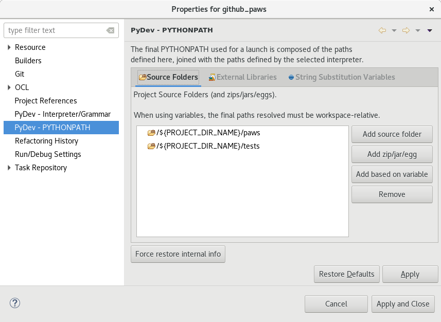
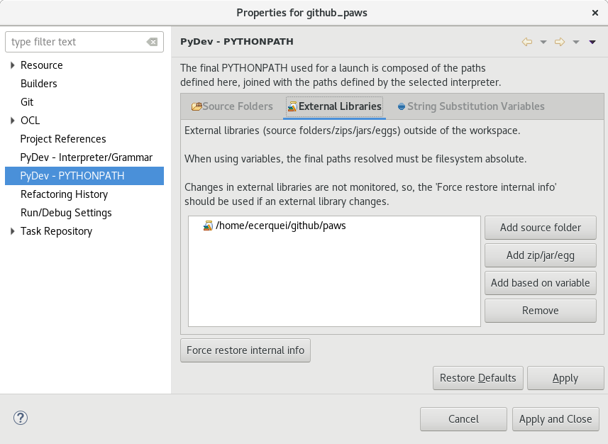
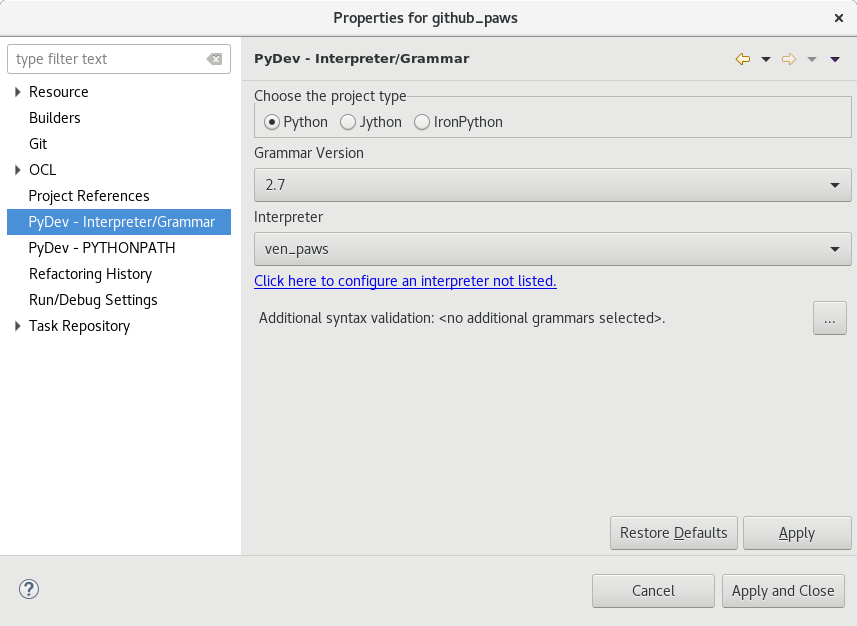
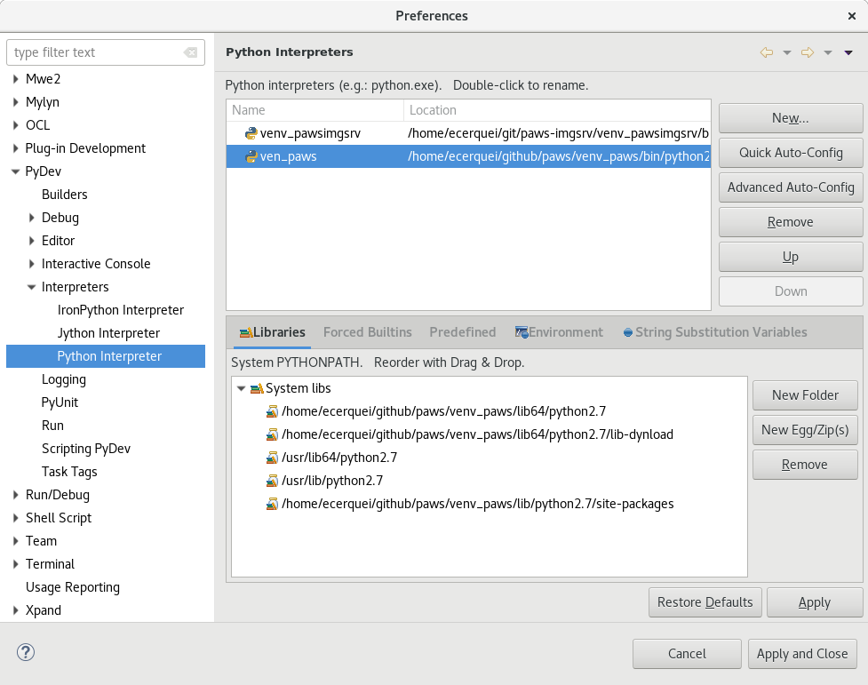
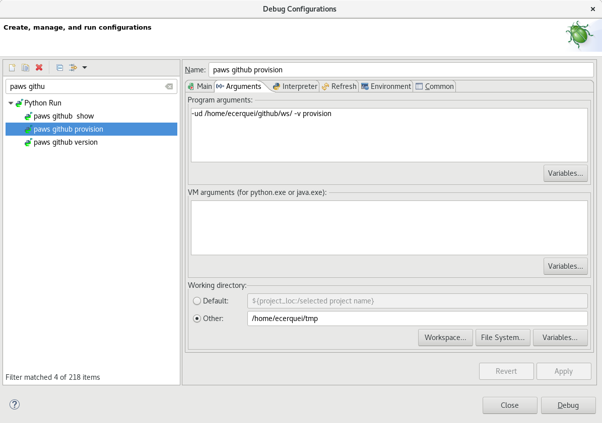

Contributing¶
There are several ways to contribute with PAWS project and everyone is welcome:
- are you python or ansible guy? you can fix bugs or improve the application with new features
- are you Windows guy? you can add new powershell scripts at ws repo https://github.com/rhpit/ws
- do you like writing? you can help on documentation.
- and too many others … testing, reporting issues and new ideas to be implemented by developer team
Setup your local environment¶
Before you dive into contributing to paws. You will need to setup your environment so you are able to test your code changes before submitting a code review.
First enable the repositories on your system that paws requires. You can find these at the installation page.
Next you will need to install packages needed for development. Most of these packages are dependencies that paws would install when installing by repository. From a terminal, run the following command based on your operating system.
# Yum package manager
sudo yum install -y git gcc make rpm-build\
python-devel python-setuptools python-pip python2-flake8 pylint\
python-kitchen openssl-devel libffi-devel\
python-oslo-serialization python-pep8 ansible krb5-workstation
# Dnf package manager
sudo dnf install -y git gcc make rpm-build\
python-devel python-setuptools python-pip python2-flake8 pylint\
python-kitchen openssl-devel libffi-devel\
python-oslo-serialization python-pep8 ansible krb5-workstation
Once the development packages have been installed, go ahead and clone the paws and ws git repos. From a terminal, run the following command.
git clone git@github.com:rhpit/paws.git
git clone git@github.com:rhpit/ws.git
We recommend you running in a Python virtual environment so from your terminal run the following commands.
Create a python virtual environment, activate it and install required libs:
# Switch directories to where you cloned paws git
$ cd paws
virtualenv -p /usr/bin/python2.7 venv_paws
source venv_paws/bin/activate
pip install -r requirements-dev.txt --upgrade
Build¶
Now that your environment is setup to build paws, lets go through the basics on building/installing paws from source.
At the root of paws git folder there is a Makefile. From your terminal run the following command to see available options by paws.
$ make
Here are some of the common ones used by paws developers/contributors.
Documentation
From your terminal run the following command to build paws sphinx documentation.
$ make doc
A separated paws-doc folder will be created at same root as paws folder and you can open the full documentation locally in html format at file:///home/user/git/paws-doc/html/index.html
Build RPM
From your terminal run the following command to build paws RPM.
$ make rpm
From the console output you will see something similar as below stating where the RPM was generated. From there you can go ahead and install it.
# Yum package manager
Wrote: /home/cloud-user/paws/rpmbuild/RPMS/noarch/paws-0.3.4-0.noarch.rpm
sudo yum install -y /home/cloud-user/paws/rpmbuild/RPMS/noarch/paws-0.3.4-0.noarch.rpm
# Dnf package manager
Wrote: /home/fedora/paws/rpmbuild/RPMS/noarch/paws-0.3.4-0.noarch.rpm
sudo dnf install -y /home/fedora/paws/rpmbuild/RPMS/noarch/paws-0.3.4-0.noarch.rpm
pip
For development we recommend installing PAWS by pip as the main reason you can isolate the application running into a python virtual environment like example:
virtualenv -p /usr/bin/python2.7 venv
source venv/bin/activate
(venv) pip install /home/user/git/paws/dist/paws-0.3.8.tar.gz
The install command above is using the local tar.gz built previously by running make pip command. It also could be installed from a pypi-test repo running:
pip install --index-url https://test.pypi.org/simple/ paws
Code check
Before any commit make sure your code changes are following the code standard of this project running the command:
cd paws
make codecheck
New release¶
List of actions that need to be performed for a new release:
- update paws/version.txt
- update version and release variables in Makefile and paws.spec
- make codecheck – fix if needed
- commit your changes
- make doc ( access locally and double check before update upstream doc )
- make gh-pages – if needed
- update docker images running
- make build-centos
- make build-fedora
- make push-centos
- make push-fedora
- make copr-dev
- make copr-upstream
IDE¶
Eclipse pydev
on eclipse and pydev fixing unresolved imports or to link source code to correct path double check:
- venv_paws in Python interpreter and project root folder as external libraries
- clean all / build projects
see screenshots:
   If you are seeing the error module (setup) is missing interpreter line when running PAWS from your Eclipse IDE maybe for debug purpose you need to change the path for Working directory to anything else out of your source code.

{kind=link}
{kind=link}
{kind=link}
{kind=link}
{kind=link}